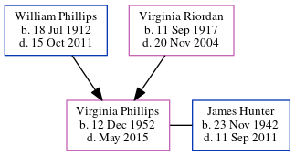

Virginia Frances Hunter (née Phillips) 1952 - 2015
[ Home ] | [ Calendar ] | [ Surnames Index ] | [ Census Index ] | [ Family History ]The child of William Phillips (a telegram delivery man per census at age 17) and Virginia Riordan, Virginia Phillips, the aunt of Michele Copp (née Phillips), was born on Dec 12, 19521,2,3. She and married James Hunter in Miami, Miami-Dade, Florida, USA on Nov 7, 19804.
During her life, she was living in Miami, FL in 19932; and in Miami, Florida, USA3.
She died in May 2015 in Ocala, Marion, Florida1 and was buried in Ocala, Marion County, Florida after May 1, 20151.
Parents
- William Hiram was born on Jul 18, 1912
- Virginia Rita Mae was born on Sep 11, 1917
Citations
- Global, Find A Grave Index for Burials at Sea and other Select Burial Locations, 1300s-Current Ancestry.com Operations, Inc.
- U.S., Public Records Index, 1950-1993, Volume 1 Ancestry.com Operations, Inc. (Voter Registration Lists, Public Record Filings, Historical Residential Records, and Other Household Database Listings.)
- U.S., Public Records Index, 1950-1993, Volume 2 Ancestry.com Operations, Inc. (Voter Registration Lists, Public Record Filings, Historical Residential Records, and Other Household Database Listings.)
- Florida, U.S., Marriage Indexes, 1822-1875 and 1927-2001 Ancestry.com Operations Inc (
Florida Department of Health. Florida Marriage Index, 1927-2001. Florida Department of Health, Jacksonville, Florida. Marriages records from various counties located in county courthouses and/or on microfilm at the Family History Library.
)
Family Tree
Generated by ged2site. Last updated on Jun 6, 2024